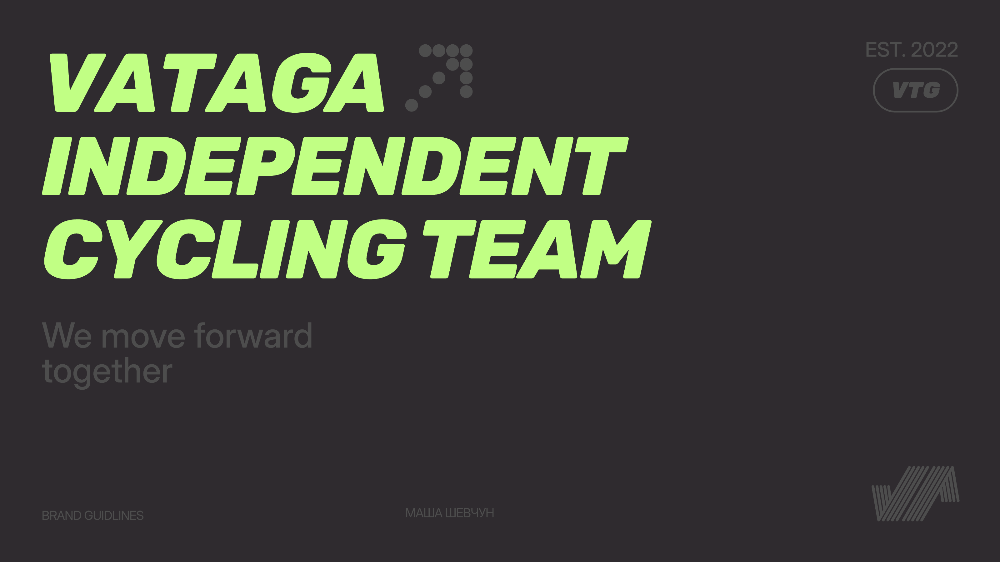
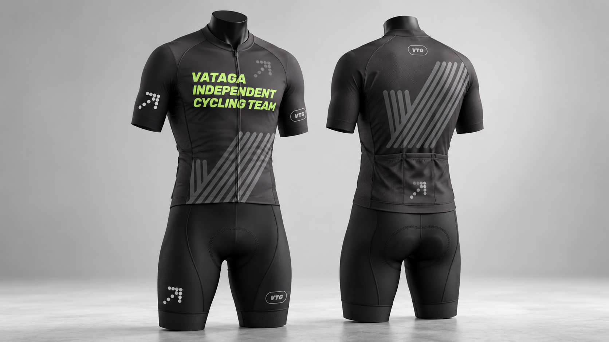
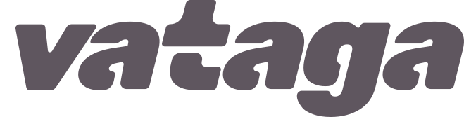
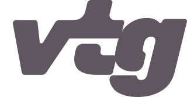
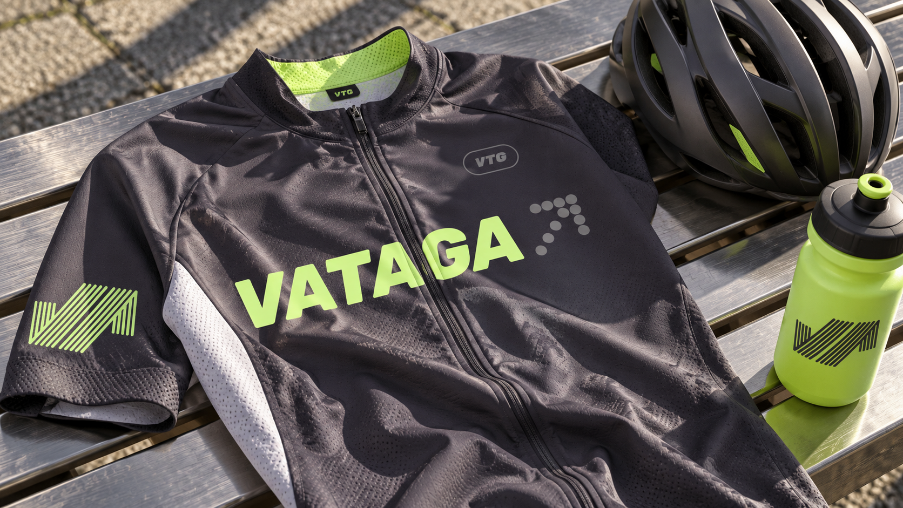
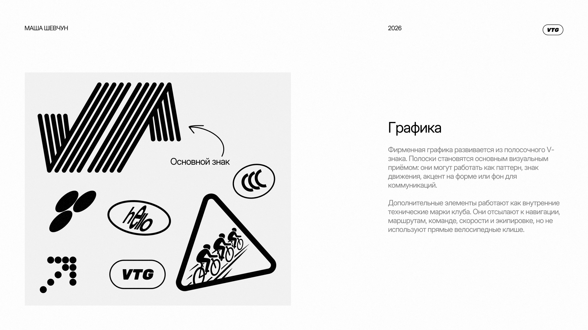

Айдентика · 2026
Движение
одной командой.

Идея бренда
Ритм. Маршрут.
Один поток.
Ехать
Уверенный
Дружелюбный
Технический
We move forward together
Логосистема
Плотная форма, спортивный ритм и две версии знака.


Цвет
Технический графит + энергичный лайм.
Graphite#5F565F
Move#C1FF84
Grey#D0D0D0
Clarity#F2F2F2
Типографика
Inter Display + Rubik ExtraBold Italic.
Inter Display / Regular
Aa
Rubik / ExtraBold Italic
Ride


We move
forward together.